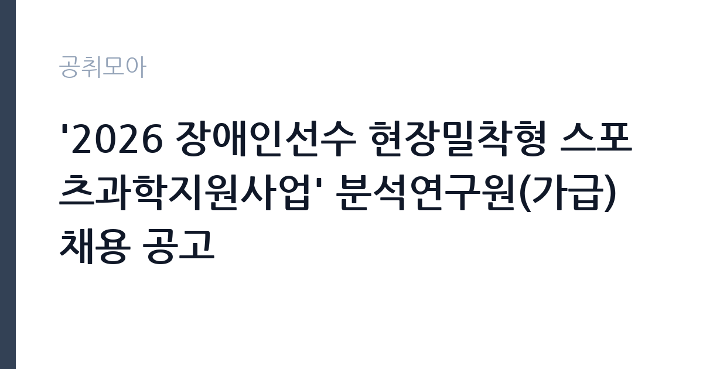

[공공기관] '2026 장애인선수 현장밀착형 스포츠과학지원사업' 분석연구원(가급) 채용 공고
서울올림픽기념국민체육진흥공단 · 경기 · 마감 2026-11-02 (D-15) · 출처 잡알리오

한눈에 보는 모집 조건
| 기관 | 서울올림픽기념국민체육진흥공단 |
|---|---|
| 공고명 | '2026 장애인선수 현장밀착형 스포츠과학지원사업' 분석연구원(가급) 채용 공고 |
| 고용형태 | 정규직 |
| 근무지 | 경기 |
| 게시일 | 2026-10-19 |
| 마감일 | 2026-11-02 (D-15) |
지원자격, 이렇게 읽으세요
- 공공기관 채용공시
- 세부 조건은 원문 공고문 확인
자격 요건이 명확합니다. 스포츠과학이나 운동역학 관련 박사학위를 가졌거나, 석사학위를 가진 뒤 관련 경력이 4년 이상이어야 합니다. 학위 예정자도 졸업예정증명서를 낼 수 있으면 지원할 수 있습니다. 경력으로 인정되는 범위는 박사 학위과정에서의 연구 활동, 연구기관이나 대학에서 공동연구자·연구보조원·조교로 근무한 기간, 선수 대상 지원 업무 등이며, 증빙서류를 내지 않은 경력은 기간에 포함되지 않습니다. 공통 요건으로 공고일 기준 만 60세 미만이어야 하고, 인사규정상 임용결격사유가 없어야 하며, 채용 예정일부터 즉시 근무가 가능해야 합니다.
이 공고의 포인트
이 자리의 특성은 연구 대상이 명확하다는 점입니다. 장애인 국가대표 선수의 경기력 향상을 위해 현장에서 체력과 동작을 측정하고 데이터를 분석합니다. 실험실에 머무는 연구가 아니라 훈련 현장으로 들어가는 연구라, 선수와 코치를 상대하는 커뮤니케이션 능력이 중요합니다. 이전 차수까지 여러 번 공고가 이어진 사업이라 채용이 반복되고 있는데, 그만큼 자격을 갖춘 지원자의 폭이 좁다는 뜻이기도 합니다. 근무지가 이천이라는 점은 수도권 거주자에게 고려할 조건입니다.
전형은 어떻게 진행되나
전형은 서류전형과 면접전형으로 진행되는 것이 일반적이며, 직무수행계획이나 연구 실적을 함께 평가합니다. 서류에서는 학위와 경력 증빙이 기준을 충족하는지 확인하고, 면접에서는 측정 장비 운용 능력과 연구 설계 역량, 현장 대응력을 봅니다. 접수는 공단 채용 홈페이지를 통해 온라인으로 진행되고, 마감은 2026년 11월 2일입니다. 경력 인정을 받으려면 경력증명서와 4대보험 자격득실확인서 같은 증빙을 미리 준비해야 합니다. 제출서류가 누락되면 경력 기간이 인정되지 않으므로 사전 점검이 필요합니다.
원문에서 확인한 전형 방식
1. 공통 ㅇ 연령 제한 없음 * 단, 채용공고일 기준 만 60세 미만인 사람 ㅇ 공단 인사규정 제20조(임용결격사유)에 해당하지 않는 사람 ㅇ 채용예정일 즉시 근무 가능한 사람 2. 필수 ㅇ 스포츠과학, 운동역학 관련 박사학위(예정*)자 또는 석사학위자로 관련 경력** 4년 이상 * 학위 예정자는 졸업예정증명서 제출 가능자에 한함 ======================================================================= * 증빙서류를 제출하지 않은 경력은 경력 기간에 포함되지 않음 ** 경력이라 함은 박사 학위과정, 연구기관(대학 포함) 등에서 공동연구자, 연구보조원, 조교 등으로 근무하거나, 선수 대상 스포츠과학 지원 업무(동작분석, 운동 역학 분석, 경기·훈련 영상 분석, 기술·전술 분석) 등 스포츠과학 연구 또는 현장지원 업무를 수행한 경력을 말하며, 월 단위 합산함.(단, 석사학위 취득 이후 경력에 한해 인정하며 박사학위과정 기간과 다른 경력기간이 중복되는 경우 본인에게 유리한 경력 하나만 인정) *** 15일 이상 근무기간은 1개월로 인정함, 재직 중인 경우 공고일 기준으로 기간
이런 분께 추천해요
- 운동역학·스포츠과학 전공으로 측정·분석 경력을 쌓은 연구자
- 장애인 스포츠나 국가대표 지원 사업에 관심이 있는 지원자
- 논문이나 연구과제 실적을 기관 경력으로 인정받으려는 박사급 인력
지원 전 체크리스트
- 박사학위 또는 석사+경력 4년 요건을 충족하는가
- 경력 증빙서류로 인정 가능한 기간을 확인했는가
- 공고일 기준 만 60세 미만인가
- 채용 예정일부터 즉시 근무가 가능한가
모집 일정과 제출 타이밍
접수 마감은 2026년 11월 2일입니다. 서류전형 결과와 면접 일정은 공단 채용 페이지와 개별 통보로 안내되고, 최종합격 후 임용일은 사업 일정에 맞춰 정해집니다. 사업 기간이 정해진 자리이므로 계약 기간과 재계약 조건을 확인해야 합니다. 마감일이 월요일이라 주말에 서류를 마무리하는 계획이 현실적입니다. 채용 일정은 공단 사정에 따라 조정될 수 있어 공고 페이지를 수시로 확인하는 편이 좋습니다.
직무 이해하기: 공공기관
분석연구원은 장애인 국가대표 선수의 훈련 현장에서 스포츠과학 지원을 수행합니다. 체력 측정과 동작 분석, 생리학적 지표 측정을 진행하고 그 결과를 코치진과 공유합니다. 종목별 특성에 맞는 측정 프로토콜을 설계하고, 데이터를 축적해 훈련 처방으로 연결합니다. 지원 사업의 성과를 정리해 보고서로 만드는 일도 포함됩니다. 장애 유형에 따라 측정 방식이 달라지므로, 표준화된 프로토콜을 스스로 조정할 수 있는 연구 역량이 요구됩니다.
자기소개서 작성 팁
자기소개서와 연구 실적은 측정·분석의 구체성으로 승부해야 합니다. 어떤 종목의 선수를 대상으로 어떤 장비와 지표를 사용해 어떤 결론을 도출했는지를 사례로 쓰세요. 장애인 스포츠 지원 경험이 있다면 최우선으로 배치하고, 없다면 일반 선수 지원 경험에서 장애 유형별 조정 가능성을 어떻게 고려할지 서술하세요. 지원동기는 이 사업이 국가대표 지원 체계에서 갖는 의미와 연결하면 좋습니다. 수치를 인용할 때는 본인이 직접 산출한 것인지, 인용한 것인지를 구분해 밝히세요.
면접 준비 포인트
면접에서는 연구 설계 능력과 현장 적응력을 확인합니다. 측정 장비의 원리와 오차 관리, 데이터 신뢰도를 어떻게 확보하는지에 대한 질문이 나올 수 있습니다. 선수나 코치가 분석 결과를 받아들이지 않을 때 어떻게 설득할지도 준비하세요. 사업 기간과 계약 조건을 이해하고 있는지도 확인 대상입니다. 답변은 연구 경험의 구체적 장면으로 채우고, 모르는 장비나 방법은 학습 계획으로 답하는 편이 신뢰를 줍니다.
급여·근무조건 읽는 법
공단의 보수는 직급과 경력에 따른 사내 보수 체계로 지급되며, 이 공고의 직급은 가급입니다. 정확한 초임과 수당 체계는 원문 공고문의 보수 항목과 공단 채용 안내에서 확인해야 하며, 이 기사에서 금액을 추정하지 않습니다. 공공기관 경영정보 공시인 알리오에서 공단의 평균 보수와 복리후생 항목을 함께 확인할 수 있습니다. 계약 기간과 수습 기간, 성과급 지급 기준도 채용 담당 부서에 확인하는 편이 정확합니다. 근무지는 경기도 이천으로, 출퇴근과 기숙사 이용 가능 여부를 함께 확인하세요.
자주 묻는 질문
- 석사만으로 지원할 수 있나요
가능합니다. 석사학위 소지자로서 스포츠과학·운동역학 관련 경력이 4년 이상이면 지원 자격을 갖춥니다. 경력은 증빙서류로 입증해야 합니다. - 학위 예정자도 지원할 수 있나요
가능합니다. 졸업예정증명서를 제출할 수 있는 학위 예정자는 지원할 수 있다고 공고에 명시되어 있습니다. - 근무지는 어디인가요
경기도 이천의 한국스포츠과학원입니다. 장애인 국가대표 훈련 현장을 오가며 근무하는 형태입니다.
함께 보면 좋은 공고
[공공기관] 한국토지주택공사 서울지역본부 기간제근로자(매입행정역, 매입기술역, 공사원가검토역, 매입변호사, 매입감정평가사) 채용공고 — 마감 2026-11-02[공공기관] (보훈 및 장애인 제한경쟁) 육아휴직자 대체 시간선택제 일자리 채용 — 마감 2026-11-02[공공기관] 광주전남지사 기간제 계약직(육아휴직 대체인력) 채용 공고 — 마감 2026-11-02출처: 잡알리오 공개정보를 바탕으로 공취모아가 정리한 안내글입니다. 모집 조건·일정은 변경될 수 있으니 지원 전 반드시 원문 공고문을 확인하세요. 본 글은 정보 제공용이며 합격을 보장하지 않습니다.